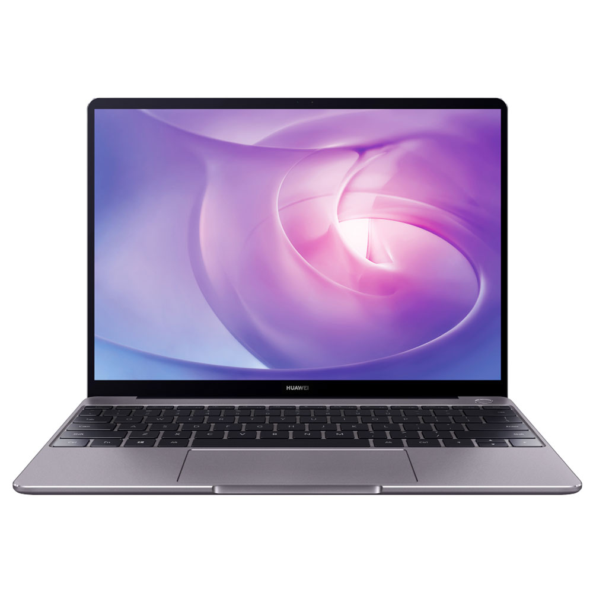

Product name
Code of product
Product cost
GO BACK
Φορητός υπολογιστής 15,6 ιντσών με στενό περιθώριο στις δύο πλευρές, μπαταρία ExpressCharge και επεξεργαστή Intel Core 11ης γενιάς.
Το Dell Vostro 3500 είναι ένα Notebook με οθόνη 15.6" που είναι το συνηθέστερο μέγεθος για κάθε χρήση. Η ανάλυση είναι 1920x1080 (Full HD) που αποτελεί την standard λύση μεταξύ ποιότητας εικόνας, κόστους και κατανάλωσης μπαταρίας. Όσο μεγαλύτερη ανάλυση τόσο καλύτερη ευκρίνεια και λεπτομέρεια έχει η εικόνα αλλά παράλληλα αυξάνεται και η κατανάλωση ενέργειας.
Ο επεξεργαστής που ενσωματώνει είναι ο Intel Core i3 1115G4 χρονισμένος στα 3Ghz της γενιάς Tiger Lake (11th Gen) (2021). Μπορεί να εκτελέσει απροβλημάτιστα εργασίες καθημερινής φύσεως όπως πλοήγηση στο διαδίκτυο, επεξεργασία κειμένου και μη απαιτητικό Gaming.
Διαθέτει μνήμη 8GB RAM DDR4 που είναι η ελάχιστη προτεινόμενη για καθημερινή χρήση.
Εξοπλίζεται με έναν δίσκο SSD των 256GB. Αυτή η χωρητικότητα είναι αρκετή για το λειτουργικό σύστημα και για μερικά βασικά προγράμματα αλλά πιθανόν να χρειαστεί και ένας εξωτερικός σκληρός δίσκος για την αποθήκευση μεγάλου όγκου φωτογραφιών, video κ.α. Επίσης εκτός απο εξωτερικό σκληρό, υπάρχει η δυνατότητα να αντικατασταθεί ο υπάρχον εσωτερικός δίσκος με άλλον μεγαλύτερης χωρητικότητας.
Περιλαμβάνει το λειτουργικό σύστημα Windows 10 Home.
Το Card Reader που διαθέτει είναι χρήσιμο για τον χρήστη που ασχολείται με την φωτογραφία και το video. Σε αντίθετη περίπτωση θα χρειαστεί η αγορά ξεχωριστού Card Reader το οποίο και θα πρέπει να καταλάβει μια απο τις υπάρχουσες θύρες USB του Laptop.
Τέλος, διαθέτει συνδεσιμότητες όπως Bluetooth, Ethernet, HDMI, USB 2.0, USB 3.1, Wi-Fi. Με την θύρα HDMI, μπορείτε να συνδέσετε εξωτερική οθόνη, τηλεόραση ή Home Cinema που διαθέτει την συγκεκριμένη θύρα με σκοπό την επέκταση της επιφάνειας εργασίας, την προβολή ταινιών απο το Laptop σε μεγαλύτερες οθόνες και τη μεταφορά του ήχου σε ποιοτικότερες πηγές. Μέσω bluetooth μπορείτε να συνδεθείτε ασύρματα σε συσκευές που διαθέτουν την συγκεκριμένη λειτουργία όπως ασύρματα ακουστικά και ασύρματα ηχεία.
Grading , Rating
Manufacturer's site